My Journey
2022 - 2025

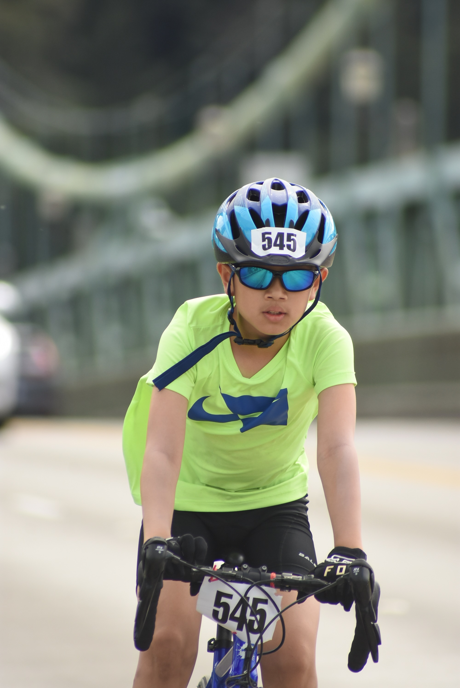
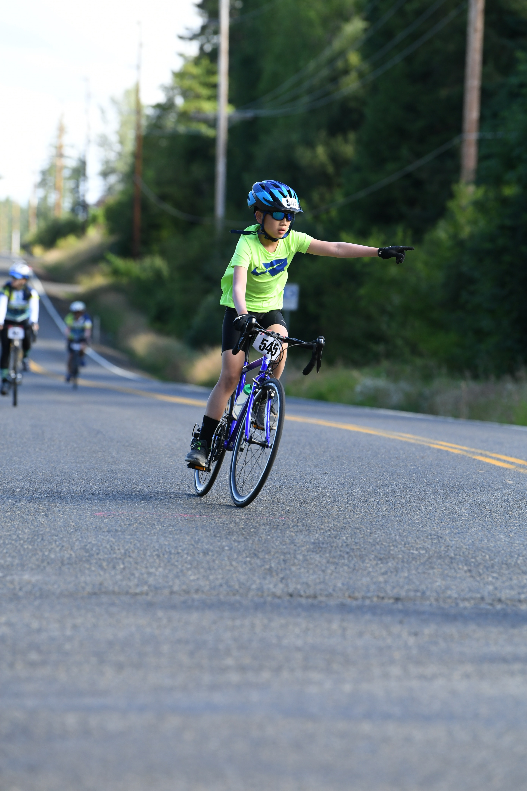
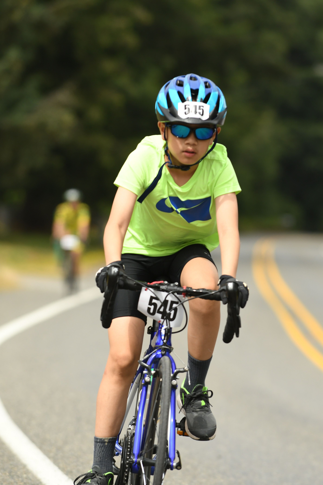
First Ride (2022)
When I was 11 years old, I wanted to do something challenging. Something that really pushed me. The idea was entirely mine. My whole family decided to take it on with me, even though none of us had ever done road biking before. The longest ride any of us had completed was only about 10 or 15 miles.
We trained by turning rides into small rewards, biking to restaurants, and participating in Cascade rides like Chilly Hilly and the Ride for Major Taylor. Those rides felt manageable, which gave us confidence to move forward with the plan. Still, we were a bit unprepared when we started. I was riding a not-so-great bike, since we didn't know if this was something we'd continue.
I don't remember every detail, but I clearly remember the burning in my legs after the first day. We hadn't even pumped our tires, so once we fixed that, day two felt noticeably easier. In the end, we all finished, marking the first year of us as a family riding STP.

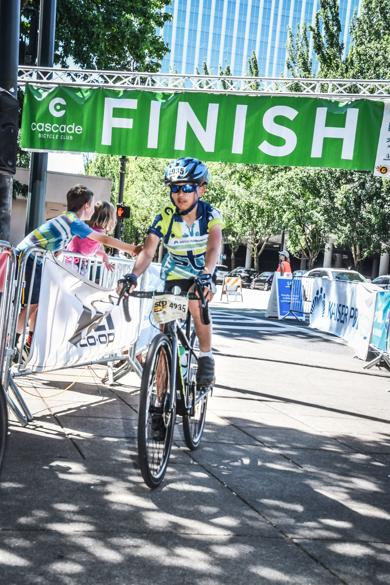

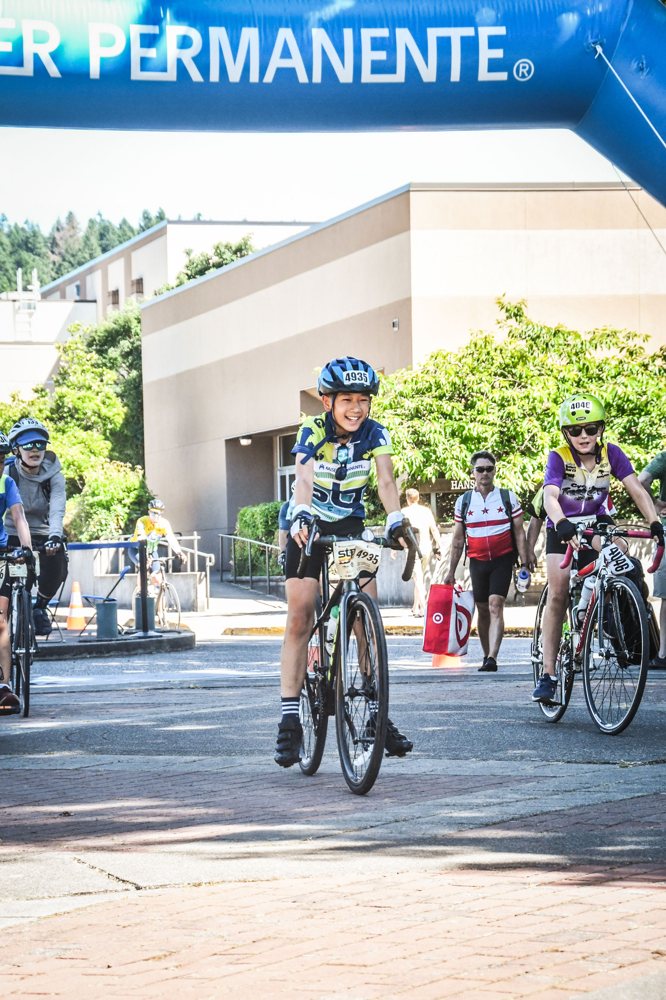
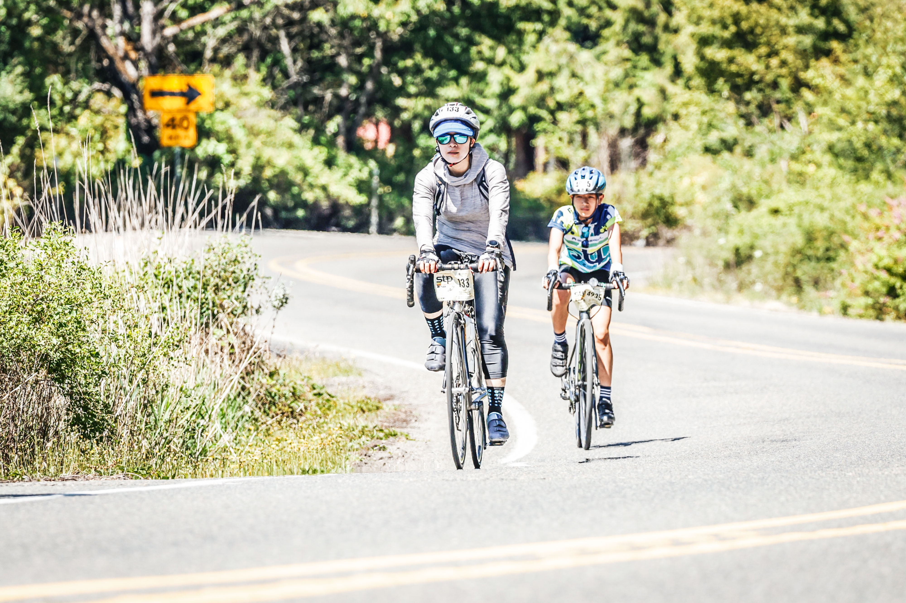
Year Two (2023)
This year, we took it more seriously. I upgraded my bike and even tried clip-in pedals for the first time. They felt awkward at first. I fell a few times, but eventually I got the hang of it. As a family, we were better prepared and trained more intentionally. The ride was still hard, but it didn't feel as bad as the first time. With experience and proper training, we were able to complete STP for our second year.

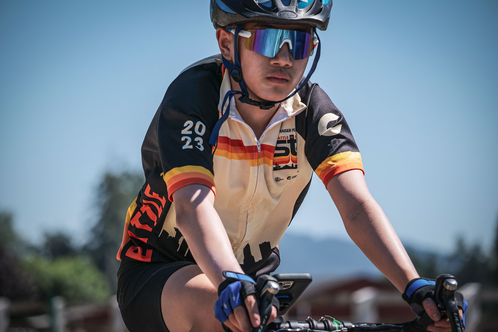
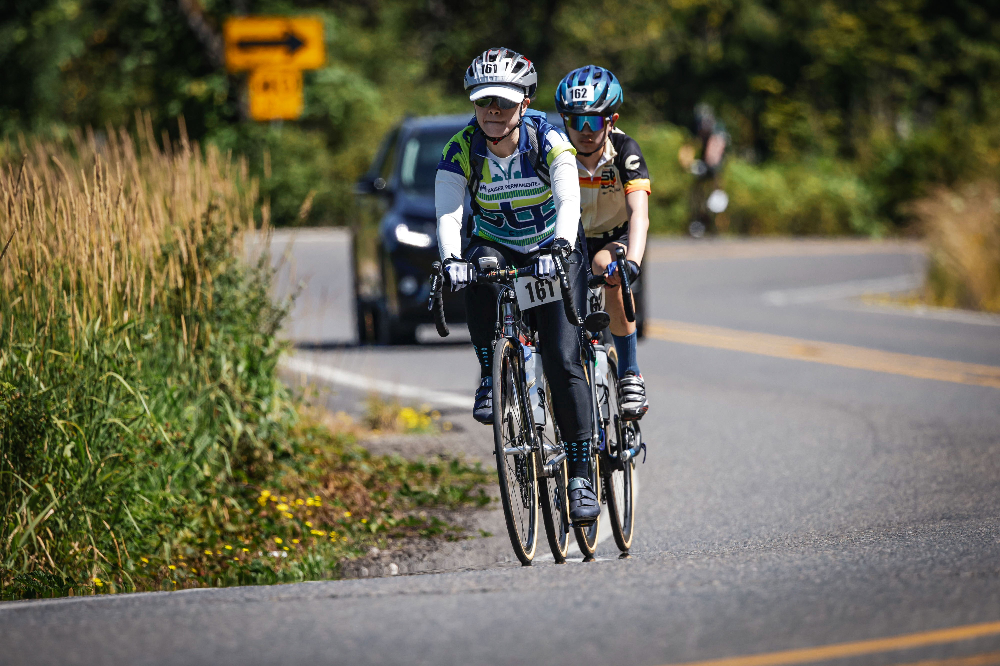
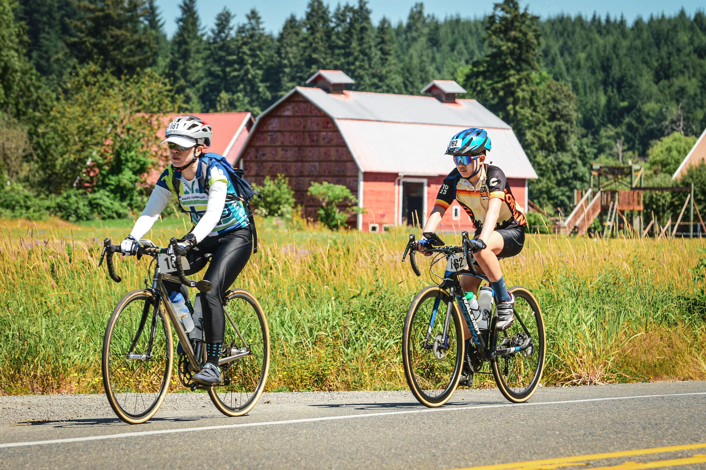
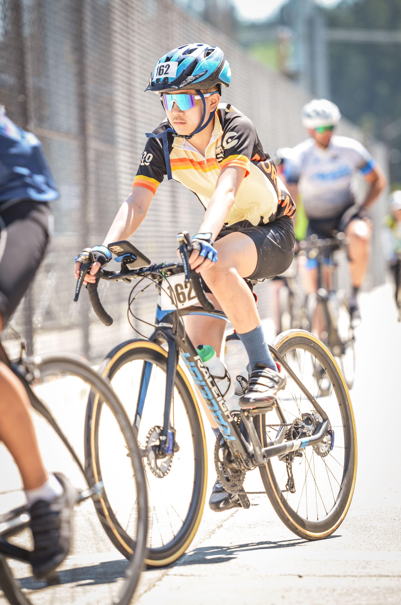
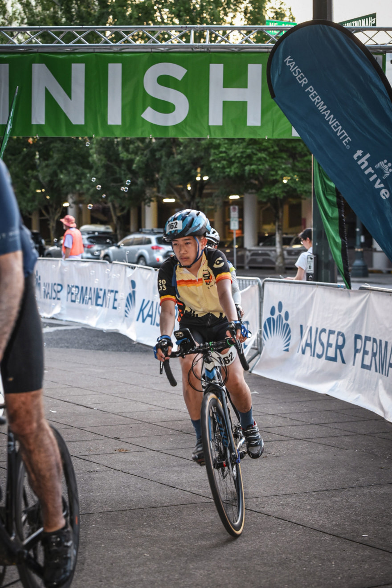
One Day Challenge (2024)
My mom and I decided to attempt STP in one day. I was 13 and riding yet another upgraded bike. That year, I also became an STP ambassador, making me the youngest STP ambassador ever. We trained especially hard, and during the ride an experienced friend led us all the way to the finish.
The ride was tough, but crossing the finish line was one of my greatest accomplishments. To the best of my knowledge, I became the youngest rider ever to complete STP in a single day. The next day, I got to relax at the hotel while we waited for the rest of my family to arrive.

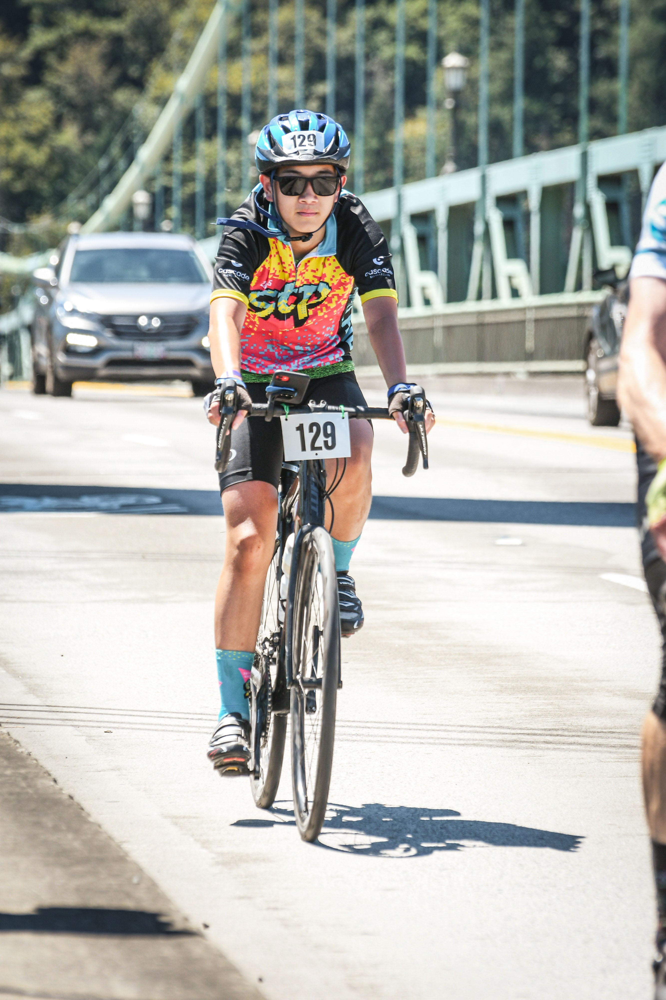
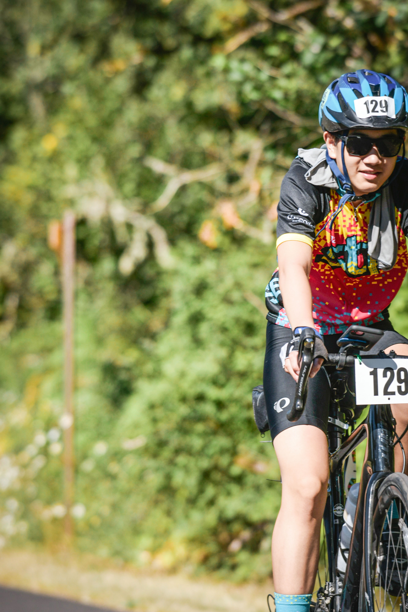
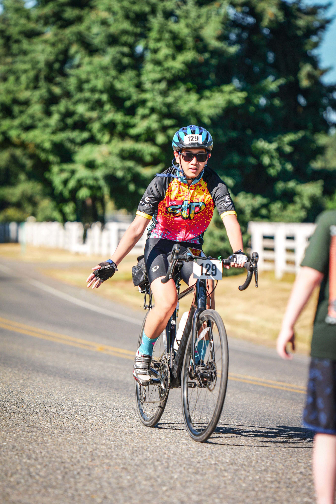
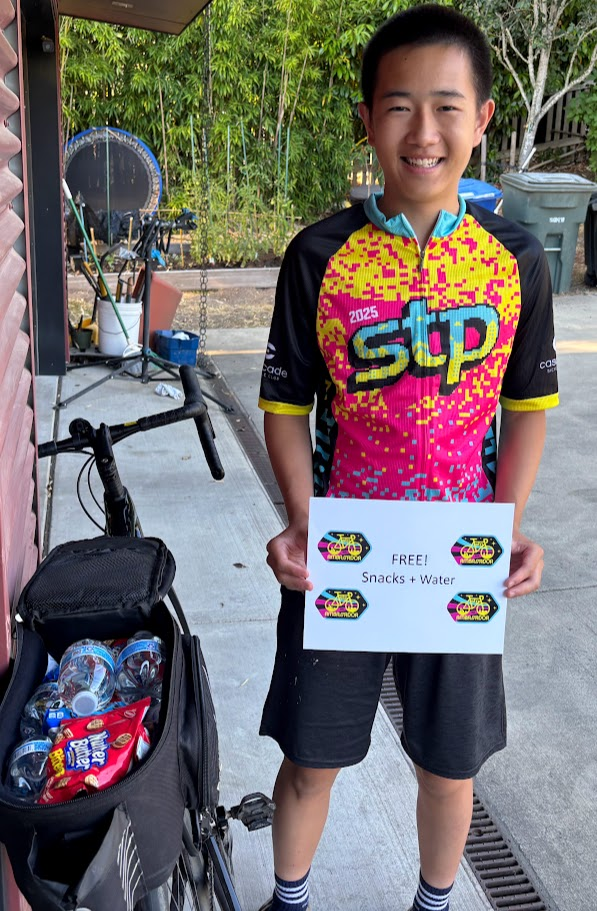
Year Two as Ambassador (2025)
I became an STP Ambassador again and received special socks as part of the role. This year, I upgraded one of my bikes by adding a rear pouch filled with water and food so I could support other riders along the way. My sister, dad and I set out together for the two-day ride, and I made myself available to help anyone who needed it.
In the middle of the afternoon, when the sun was blazing, my sister started to slow down a lot. After flagging down a medical rider, we realized she may have bonked. While we rested, I became her personal entertainment for a while. With support from me and the medical rider, she recovered, and we made it to the halfway point before dark.
On the second day, I rode 50 miles to the finish on my own because my dad and sister were moving at a slower pace. Not many people ended up needing the food I brought, but I was still glad I was prepared. In the end, we all made it to the finish line safely, marking our fourth STP.